Mobs Passivos
Os mobs passivos não atacam o jogador e normalmente fornecem recursos importantes
para a sobrevivência.
Galinha (Chicken)

Imagem: Minecraft Wiki
A galinha é um mob passivo encontrado em diversos biomas. Ela fornece penas,
carne de frango e coloca ovos periodicamente. Pode ser atraída e reproduzida
utilizando sementes.
Vaca
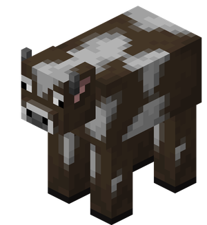
Imagem: Minecraft Wiki
A vaca fornece couro, leite e carne bovina. Ela pode ser reproduzida utilizando trigo.
Coguvaca
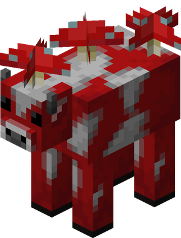
Imagem: Minecraft Wiki
A Coguvaca é uma variante da vaca encontrada nos Campos de Cogumelos.
Ela pode fornecer ensopado de cogumelos utilizando uma tigela.
Porco
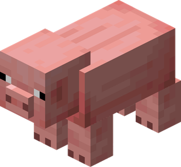
Imagem: Minecraft Wiki
O porco é um mob passivo que fornece carne suína ao ser abatido.
Pode ser montado utilizando uma sela e controlado com uma vara
com cenoura.
Ovelha

Imagem: Minecraft Wiki
A ovelha fornece lã e carne. Sua lã pode ser utilizada para fabricar camas,
tapetes e bandeiras.
Coelho
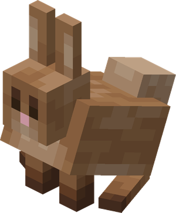
Imagem: Minecraft Wiki
O coelho é um mob passivo encontrado em diversos biomas. Ele pode
soltar pele de coelho, carne e, raramente, pé de coelho.
Morcego (Bat)
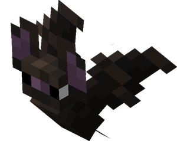
Imagem: Minecraft Wiki
O morcego é um pequeno mob passivo encontrado em cavernas.
Não possui drops nem pode ser domesticado, servindo apenas
como parte da ambientação do jogo.
Tatu (Armadillo)
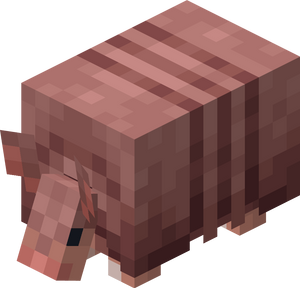
Imagem: Minecraft Wiki
O Armadillo é um mob passivo encontrado em savanas. Ele fornece
escamas que podem ser utilizadas para fabricar armaduras para lobos.
Camelo
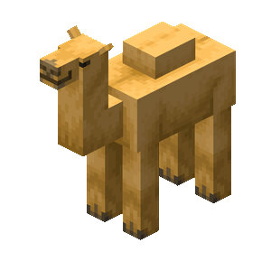
Imagem: Minecraft Wiki
O camelo é uma montaria encontrada nas vilas do deserto. Dois jogadores
podem montá-lo ao mesmo tempo.
Sniffer
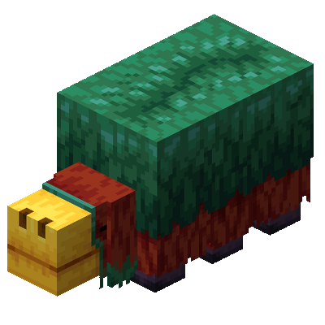
Imagem: Minecraft Wiki
O Sniffer é um mob antigo escolhido pela comunidade. Ele encontra
sementes de plantas decorativas farejando o solo.
Domesticáveis e Montarias
Cavalo
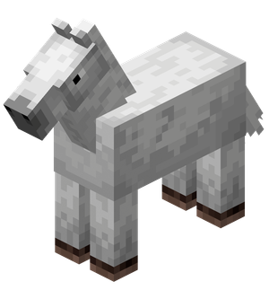
Imagem: Minecraft Wiki
O cavalo pode ser domesticado e utilizado como montaria.
Também pode usar armaduras específicas.
Cavalo Esqueleto (Skeleton Horse)
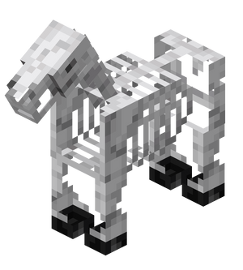
Imagem: Minecraft Wiki
O cavalo esqueleto é uma variante rara do cavalo.
Ele surge durante tempestades através da armadilha do
cavalo esqueleto e pode ser montado após ser domesticado.
Burro
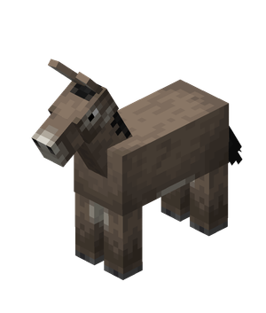
Imagem: Minecraft Wiki
O burro pode carregar baús e transportar itens durante
as aventuras.
Mula
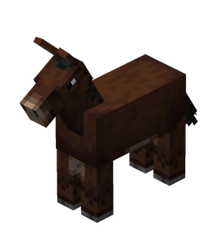
Imagem: Minecraft Wiki
A mula nasce do cruzamento entre um cavalo e um burro.
Ela também pode carregar baús.
Gato
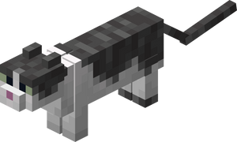
Imagem: Minecraft Wiki
Os gatos podem ser domesticados com peixe cru e afastam creepers
e phantoms quando estão próximos.
Jaguatirica (Ocelot)
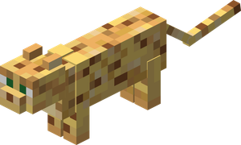
Imagem: Minecraft Wiki
A jaguatirica é um mob passivo encontrado em biomas de selva.
Ela é arisca e pode ser conquistada ganhando sua confiança
com peixes crus.
Papagaio
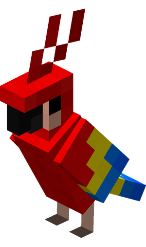
Imagem: Minecraft Wiki
O papagaio pode ser domesticado com sementes e imita
sons de diversos mobs hostis.
NPCs
Aldeão
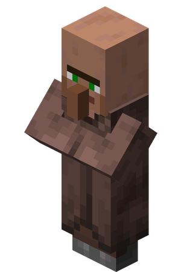
Imagem: Minecraft Wiki
O aldeão é um personagem não jogável (NPC) encontrado nas vilas. Cada aldeão
possui uma profissão e pode realizar trocas com o jogador.
Comerciante Ambulante
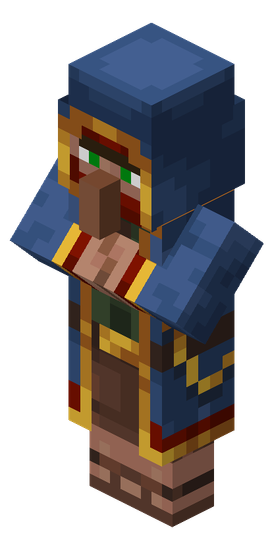
Imagem: Minecraft Wiki
O comerciante ambulante aparece aleatoriamente pelo mundo acompanhado de duas
lhamas e oferece itens variados em troca de esmeraldas.
Animais Aquáticos
Lula
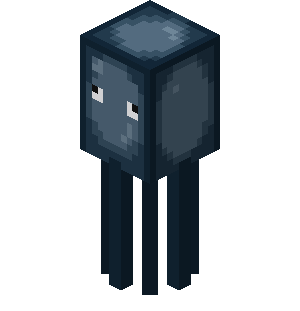
Imagem: Minecraft Wiki
A lula vive em rios e oceanos e fornece bolsas de tinta quando derrotada.
Lula Brilhante
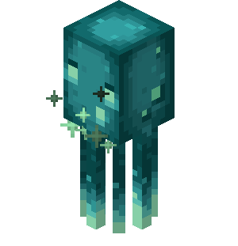
Imagem: Minecraft Wiki
A lula brilhante vive em águas profundas e fornece bolsas de tinta brilhante,
utilizadas para iluminar textos em placas.
Bacalhau
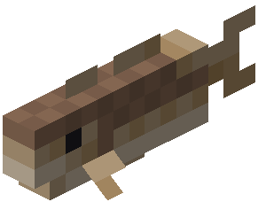
Imagem: Minecraft Wiki
O bacalhau é um peixe comum encontrado nos oceanos e pode ser utilizado
como alimento.
Salmão
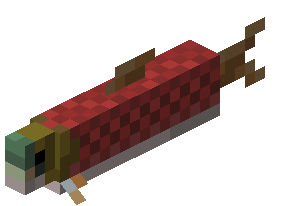
Imagem: Minecraft Wiki
O salmão aparece em rios e oceanos frios e fornece alimento quando pescado.
Peixe Tropical
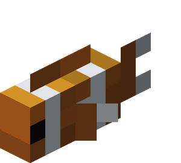
Imagem: Minecraft Wiki
Os peixes tropicais possuem dezenas de variações de cores e são encontrados
em oceanos quentes.
Baiacu
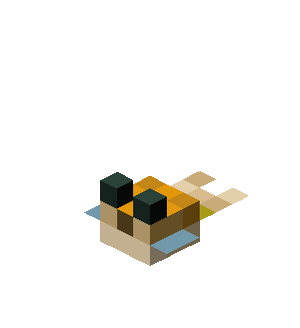
Imagem: Minecraft Wiki
O baiacu infla quando ameaçado e pode causar efeito de veneno ao jogador.
Tartaruga
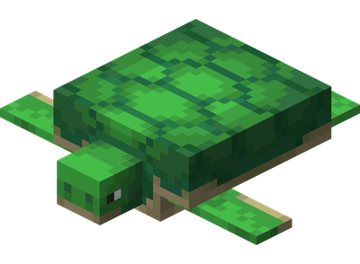
Imagem: Minecraft Wiki
As tartarugas vivem nas praias e deixam escamas quando crescem, utilizadas
para fabricar o capacete de tartaruga.
Axolote
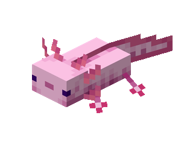
Imagem: Minecraft Wiki
O axolote vive em cavernas alagadas e ajuda o jogador atacando criaturas
aquáticas hostis.
Girino
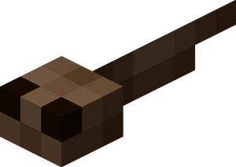
Imagem: Minecraft Wiki
O girino é a fase inicial da rã e cresce naturalmente com o passar do tempo.
Rã
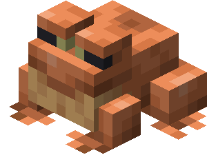
Imagem: Minecraft Wiki
A rã captura pequenos cubos de magma e produz blocos luminosos conhecidos
como Froglights.
Outros Mobs Passivos
Allay
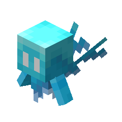
Imagem: Minecraft Wiki
O Allay é uma criatura amigável que coleta itens iguais ao objeto entregue
pelo jogador e os devolve quando encontra o destino.
Ghast Feliz
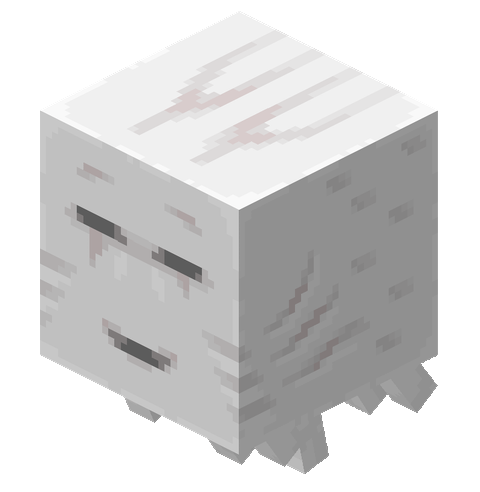
Imagem: Minecraft Wiki
O ghast feliz (Happy Ghast) é uma criatura pacífica e voadora do Minecraft. Ele serve como uma montaria que aceita até quatro jogadores ao mesmo tempo e pode ser guiado com bolas de neve.
Ghastling (Ghast feliz bebê)
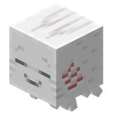
Imagem: Minecraft Wiki
O ghast feliz (Happy Ghast) é uma criatura pacífica e voadora do Minecraft. Ele serve como uma montaria que aceita até quatro jogadores ao mesmo tempo e pode ser guiado com bolas de neve.
Mobs Neutros
Os mobs neutros normalmente não atacam o jogador. No entanto, podem se tornar
agressivos quando são provocados ou em situações específicas.
Abelha
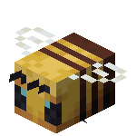
Imagem: Minecraft Wiki
A abelha coleta pólen das flores e produz mel. Ela só ataca quando é
provocada ou quando sua colmeia é destruída.
Aranha
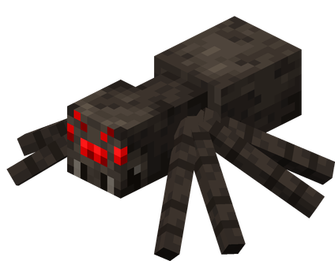
Imagem: Minecraft Wiki
A aranha é neutra durante o dia, mas torna-se hostil durante a noite ou em
locais com pouca iluminação.
Enderman
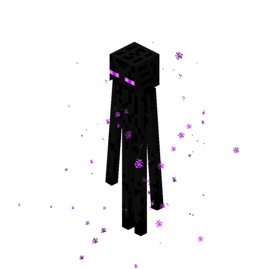
Imagem: Minecraft Wiki
O Enderman permanece calmo até que o jogador olhe diretamente para seus
olhos ou o ataque.
Lobo
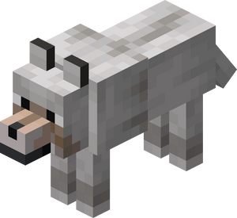
Imagem: Minecraft Wiki
O lobo pode ser domesticado utilizando ossos. Quando selvagem, ele ataca
apenas se for provocado.
Raposa
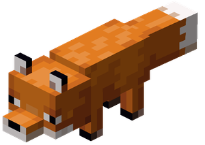
Imagem: Minecraft Wiki
A raposa é um mob encontrado em taigas. Ela caça pequenos animais e pode
carregar itens na boca.
Panda
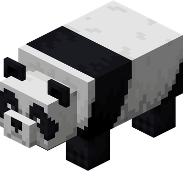
Imagem: Minecraft Wiki
Os pandas possuem diferentes personalidades. Alguns podem se tornar
agressivos quando atacados.
Cabra
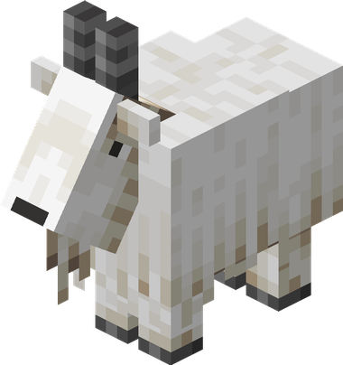
Imagem: Minecraft Wiki
As cabras vivem em montanhas e podem dar investidas contra jogadores e
outras criaturas.
Golfinho
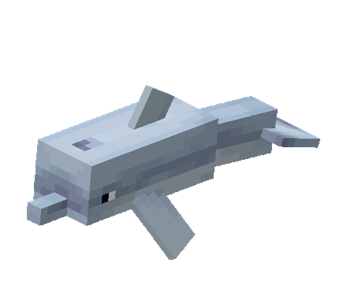
Imagem: Minecraft Wiki
O golfinho concede o efeito Graça dos Golfinhos e pode conduzir jogadores
até naufrágios e ruínas oceânicas.
Urso Polar
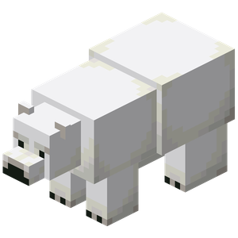
Imagem: Minecraft Wiki
O urso polar normalmente é pacífico, mas protege seus filhotes atacando
qualquer ameaça próxima.
Lhama
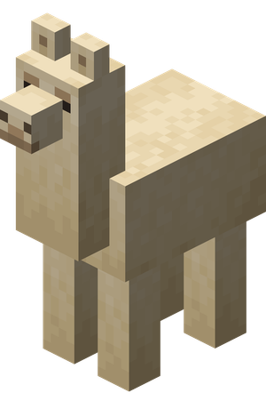
Imagem: Minecraft Wiki
A lhama pode transportar baús e atacar inimigos cuspindo quando é
provocada.
Lhama do Comerciante
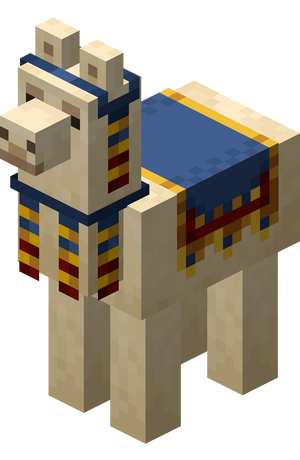
Imagem: Minecraft Wiki
A lhama do comerciante acompanha o Comerciante Ambulante e protege seu
dono cuspindo nos inimigos.
Golem de Ferro
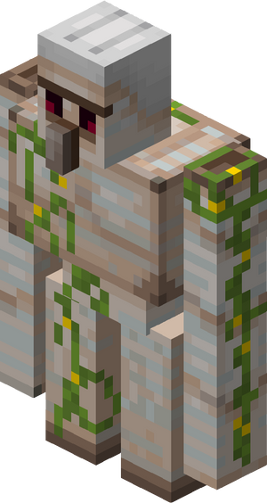
Imagem: Minecraft Wiki
O Golem de Ferro protege aldeões contra mobs hostis. Ele só ataca o jogador
caso sua reputação na vila seja muito baixa ou se for atacado.
Mobs Hostis
Os mobs hostis atacam o jogador automaticamente quando o encontram.
Eles representam os principais desafios do Minecraft e aparecem em
diferentes dimensões do jogo.
Overworld
Creeper
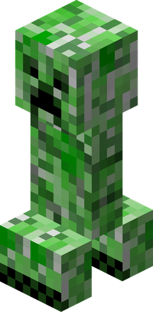
Imagem: Minecraft Wiki
O Creeper aproxima-se silenciosamente do jogador e explode quando
está próximo, causando grande dano e destruindo blocos.
Zumbi
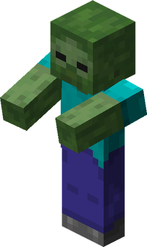
Imagem: Minecraft Wiki
O zumbi é um dos inimigos mais comuns do jogo. Ele ataca corpo a
corpo e pode aparecer durante a noite ou em locais escuros.
Afogado
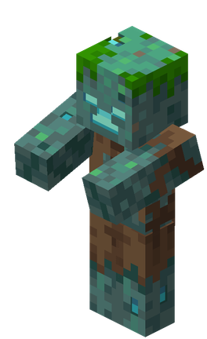
Imagem: Minecraft Wiki
O afogado é uma variante aquática do zumbi. Alguns carregam tridentes,
tornando-se adversários bastante perigosos.
Husk (Zumbi do Deserto)
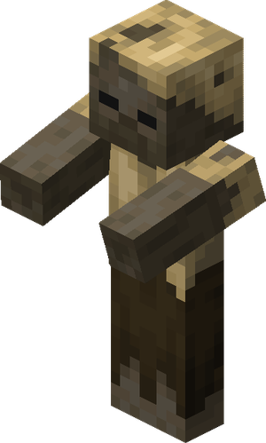
Imagem: Minecraft Wiki
O Husk é um tipo de zumbi encontrado em desertos. Seus ataques podem
causar o efeito de fome ao jogador.
Zumbi Aldeão
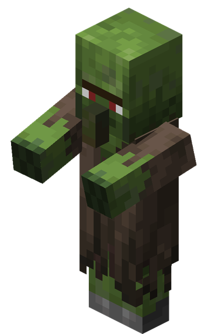
Imagem: Minecraft Wiki
O zumbi aldeão pode ser curado utilizando uma maçã dourada e uma
poção de fraqueza, transformando-se novamente em aldeão.
Esqueleto
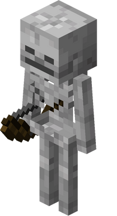
Imagem: Minecraft Wiki
O esqueleto utiliza arco e flechas para atacar à distância,
representando uma grande ameaça durante a exploração.
Vadio (Stray)
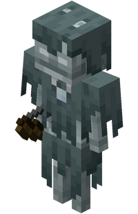
Imagem: Minecraft Wiki
O Vadio é uma variante do esqueleto encontrada em biomas gelados.
Suas flechas aplicam lentidão ao jogador.
Bogged (Esqueleto do Pântano)
Imagem: Minecraft Wiki
O Bogged é uma variante do esqueleto encontrada em regiões
pantanosas. Suas flechas podem aplicar veneno.
Bruxa
Imagem: Minecraft Wiki
A bruxa utiliza poções de dano, lentidão e veneno contra o jogador,
além de beber poções para se fortalecer.
Phantom
Imagem: Minecraft Wiki
O Phantom aparece quando o jogador permanece várias noites sem dormir
e realiza ataques mergulhando pelo céu.
Slime
Imagem: Minecraft Wiki
O Slime vive em pântanos e chunks específicos subterrâneos.
Quando derrotado, divide-se em slimes menores.
Silverfish
Imagem: Minecraft Wiki
O Silverfish vive escondido em blocos de pedra e pode convocar outros
da mesma espécie quando atacado.
Endermite
Imagem: Minecraft Wiki
O Endermite pode surgir quando uma Pérola do End é utilizada.
É um pequeno mob hostil que desaparece após algum tempo.
Warden
Imagem: Minecraft Wiki
O Warden é um dos mobs mais fortes do jogo. Apesar de ser cego,
detecta vibrações e sons produzidos pelo jogador.
Nether
Blaze
Imagem: Minecraft Wiki
O Blaze é encontrado nas Fortalezas do Nether. Ele lança bolas de fogo
contra o jogador e é a principal fonte de varetas de blaze.
Ghast
Imagem: Minecraft Wiki
O Ghast é um grande mob voador que dispara bolas de fogo explosivas.
Seus projéteis podem ser rebatidos pelo jogador.
Cubo de Magma
Imagem: Minecraft Wiki
O Cubo de Magma é semelhante ao Slime, porém vive no Nether.
Quando derrotado, divide-se em cubos menores.
Hoglin
Imagem: Minecraft Wiki
O Hoglin é um grande animal hostil encontrado nas Florestas Carmesim.
Ele fornece carne e couro quando derrotado.
Zoglin
Imagem: Minecraft Wiki
O Zoglin é um Hoglin transformado após permanecer no Overworld.
Ele ataca praticamente qualquer criatura viva.
Piglin Bruto
Imagem: Minecraft Wiki
O Piglin Bruto protege os Bastiões e sempre ataca o jogador,
mesmo que ele esteja usando armadura de ouro.
Esqueleto Wither
Imagem: Minecraft Wiki
O Esqueleto Wither é encontrado nas Fortalezas do Nether.
Seus ataques aplicam o efeito Wither e ele pode derrubar cabeças
utilizadas para invocar o Wither.
The End
Shulker
Imagem: Minecraft Wiki
O Shulker vive nas Cidades do End. Seus projéteis fazem o jogador
levitar e ele fornece conchas usadas para fabricar caixas de Shulker.
Curiosidades
Creeper
O Creeper surgiu por acidente durante o desenvolvimento do Minecraft.
Um erro ao modelar um porco acabou criando o mob que hoje é um dos
símbolos do jogo.
Ender Dragon
O Ender Dragon foi o primeiro chefe adicionado ao Minecraft e sua
derrota libera o portal de retorno ao Overworld.
Wither
Diferente do Ender Dragon, o Wither não aparece naturalmente.
Ele deve ser invocado pelo próprio jogador.
Sniffer
O Sniffer venceu a Mob Vote de 2022 e foi escolhido pela comunidade
para ser adicionado ao jogo.
Gatos
Gatos domesticados afastam Creepers e Phantoms, tornando-se excelentes
companheiros durante a exploração.
Abelhas
As abelhas ajudam na polinização das plantações, acelerando o
crescimento de diversas culturas.
Warden
O Warden é cego. Ele localiza o jogador através das vibrações e dos
sons produzidos no ambiente.